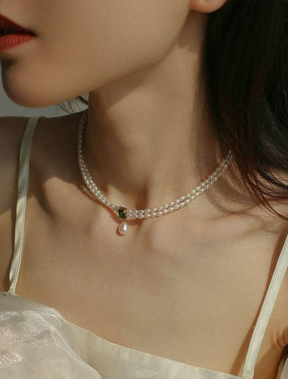

!<!DOCTYPE html>
<html lang="en">
<head>
  <link rel="stylesheet" href="style2.css" />
  <title>Pearl Emerald Necklace</title>
</head>

<body>
    <div id="mainhead">
        <div id="logo">
        
        </div>
        <br>
        <div id="header">
            <a id="a1" href="index.html">HOME</a>
            <a id="a1">SHOP</a>
            <a id="a1">ABOUT US</a>
            <a id="a1">FAQ</a>
            <a id="a1">CONTACT</a>
        </div>
        <br>
    </div>
    <br><br><br><br><br><br><br>

    <div class="cont1">
        <div class="pro">
            
            <br><br>
            
        </div>
        <div class="pro">
            
            <br><br>
            
        </div>
        <div class="prod" style="padding: 10px 20px;">
            <a id="name">Super-Slim Freshwater Pearl Double Strand Emerald Layer Necklace</a>
            <br><br>
            
            <br><br><br>
            <a id="priceno">Rs.9,999</a>
            <a id="price">Rs. 7,799</a>
            <br><br>
            <button class="b1" style="color: #fdf5e7;">Add To Bag</button>
            <br><br><br><hr><br><br>
            
            <br><br><br><hr><br>
            <a id="tt">PRODUCT DESCRIPTION</a>
            <br><br>
            <a id="det">Super-Slim Freshwater Pearl Double Strand Emerald Layer Necklace</a>
            <br><br>
            <a id="des">Super slim strands of natural freshwater pearls give this vintage-inspired necklace an Old World elegance, fashioned into effortless wearability and perfect for your next special moment. A deep forest green emerald stone sits in a four-prong setting in the front, suspending a pearl shimmering with beautiful pastel colors. A lobster clasp and extension chain allows this sophisticated necklace to accommodate various lengths for your convenience.</a>
            <br><br>
            <a id="det">Details:</a>
            <br><br>
            <a id="des">Necklace length: 36-40cm</a>
            <br>
            <a id="des">Pearl Size Width: 3mm and 8mm</a>
            <br>
            <a id="des">Weight: 11.8g</a>
            <br>
            <a id="des">Material: 18 Gold Plated on Brass with Natural</a>
            <br>
            <a id="des">Freshwater Pearl</a>
            <br><br>
            <a id="des">Note:  Our jewelry is handmade. Naturally formed shapes of freshwater baroque pearls may vary. The actual product may be slightly different from the pictures shown. </a>
            <br><br>
        </div>
    </div>
    <hr><br>
    <div>
        <div id="recs"><a id="more">You May Also Like</a></div>
        <br>
        <div class="cont2">
            <div class="m1">
                <br>
                <a id="a2">Leaf Pearl Drop Necklace</a><br>
                <a id="a2">Rs. 6,399</a><br>
            </div>
            <div class="m1">
                <br>
                <a id="a2">Pearl Bolo Bracelet</a><br>
                <a id="a2">Rs. 4,099</a><br>
            </div>
            <div class="m1">
                <br>
                <a id="a2">Rectangle Baroque Ring</a><br>
                <a id="a2">Rs. 3,599</a><br>
            </div>
            <div class="m1">
                <br>
                <a id="a2">Gold Twisted Earrings</a><br>
                <a id="a2">Rs. 2,999</a><br>
            </div>
        </div>
    </div>
    <br><hr><br>
    <div>
        <div id="recs"><a id="more">Trusted By Our Community</a></div>
        <br>
        <div class="cont3">
            <div class="m2">
                <a id="a3">Kashish R.</a><br><br>
                <a id="a4">I've been searching for a unique necklace to wear on my wedding day, and this pearl emerald necklace is exactly what I was looking for! It adds a pop of color to my bridal ensemble and complements my emerald engagement ring perfectly.</a><br>
            </div>
            <div class="m2">
                <a id="a3">Malini L.</a><br><br>
                <a id="a4">I absolutely adore my pearl emerald necklace! The combination of pearls and emeralds is stunning, and the craftsmanship is top-notch. It's the perfect accessory for both casual and formal occasions.</a><br>
            </div>
            <div class="m2">
                <a id="a3">Lalita K.</a><br><br>
                <a id="a4">I was hesitant to purchase jewelry online, but I'm so glad I took the plunge with this necklace! It looks even more beautiful in person. The emeralds have a vibrant green hue, and the pearls have a lovely sheen.</a><br>
            </div>
            <div class="m2">
                <a id="a3">Joshua A.</a><br><br>
                <a id="a4">I bought this necklace as a gift for my wife, and she hasn't stopped wearing it since! The pearls are lustrous, and the emeralds add a touch of elegance.</a><br>
            </div>
        </div>
    </div>
    <br>
    <div id="but">
        <button class="b2" style="color: floralwhite;">Show more reviews</button>
    </div>
    <br><br>
</body>